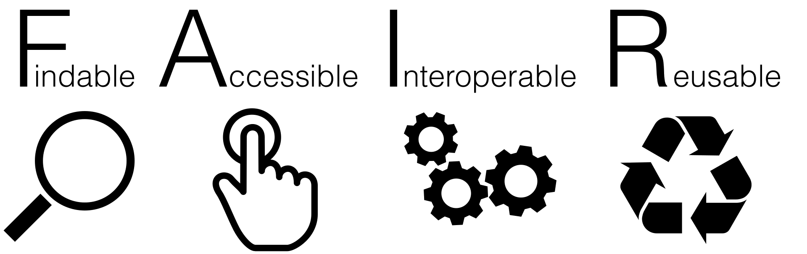

Reproducibility in Scientific Computing
What is reproducibility?
For this course we will take the following definition:
- Reproducible: Performing the same analysis on the same data produces the same results
Why is reproducibility important?
In the context of scientific computing/analysis, we want to be able to:
- Verify our own results
- Verify the results of others
By making our work reproducible, we ensure that both these things are not just possible, but straightforward
Additional benefits
- Safely implement changes
- Can perform workflow on different inputs more easily
- Simpler for new team members to get started
- Better collaboration
Where do we go from here…
Throughout the rest of this session, we will walk through the steps that we can take to go from an ad hoc collection of scripts into a reproducible scientific workflow!
Version Control
Version Control
- The first thing we should do is move our project into version control (VC)
- This way we never lose the original state of the project
- We can then try things without worrying about breaking anything!
- This will also benefit any later development, so the sooner the better
What to add to VC
- DON’T do this:
- Our repository should only contain:
- Code/scripts
- Documentation
- Metadata
- i.e. just text files
There will be some exceptions to this rule, but for the vast majority of cases it will be true.
What to add to VC
- Large datafiles should be hosted separately (e.g. on Zenodo)
- External dependencies should be declared
- e.g. link to Zenodo dataset in docs and code
- Use .gitignore to automatically ignore any unwanted files
- e.g. build outputs
Aside - testing with worktrees
- git worktrees are like “local clones” of a repository
- Create a worktree:
- Will make a new directory, with only files that are tracked
- Can use as a cleanroom to ensure all dependencies are there
- For more info:
git worktree add --help
What to do next?
- The repository can then also be hosted a remote service (e.g. GitHub, GitLab, Codeberg, Bitbucket)
- This will make collaboration with other people a lot easier!
- It will also mean that any work done can be accessed by collaborators
Dependencies
Dependencies
- All software has dependencies
- Some are more obvious than others:
- Data/input
- Packages/libraries e.g. numpy, Eigen
- System libraries
- Compiler/Interpreter
- If your code can’t run without it, it’s a dependency!
How to discover dependencies
- Some dependencies may be “implicit”
- For example, you may have a library installed on your system
- Since the code “just works”, you may not be aware of the dependency
- To find these, try running on a different system (or multiple) and see what breaks
How to declare dependencies
- List them in a tracked file in the repository
- e.g. add a “Dependencies” section to your README.md
- Specify:
- Versions of each dependency e.g. numpy 2.3.9
- Where/how to aquire the dependency
Dependency metadata
- There are automated ways of resolving dependencies
- Usually language/tool specific
- Some tools automatically update dependency metadata
- e.g. Rust’s cargo, Julia’s Pkg, uv for Python
- Project file: Depencies and compatible versions
- Lock file: Write exact version (plus other metadata e.g. source) of every dependency you are using
- Important to track both - lock files record the exact environment you use
System dependencies
- Conda
- Docker
- Nix/Guix
Testing
Testing
- Important to test code
- Check that code does what it should
- Test on inputs outside of the “normal” range
- Verify that results of code do not change
- Can also be used to check dependency changes
Unit tests
- Test the smallest logical unit of the code
- Ensure each component works as intended
- Test functions for known results
- Compare to previously produced results
Integration tests
- Test that components work together
- Try to have a range of complexity of tests
- Can use previous results to validate model
- Ensure no regression of results
Adding tests to a project
- Often we inherit large projects with no unit tests
- How do we improve test coverage in this case?
Adding tests to a project
- Create integration tests - use previous results or create “golden outputs”
- Identify and extract parts of the code which can be split apart
- Create unit tests for the new functions
- Run the integration tests to ensure results have not changed
- Repeat 2-4 until all code has unit tests
- Whenever you change a part of the code, try to use this method
- Code coverage will slowly improve, with less extra work
Automating tests (CI etc)
- Automate testing to ensure tests pass for every commit
- Also useful for tests that can take a long time/need lots of resources
- If hosting code on e.g. GitHub, GitLab etc, can use Continuous Integration (CI)
Documentation
Documentation
- Not all information can be conveyed in code
- We need to tell other people how to use our projects
- And sometimes ourselves!
- Documentation covers anything outside of the code/metadata
README
- Markdown file at the project root
- Should contain:
- Description of project
- Dependencies
- Instructions on building/running
Generating Docs
- Use tools that generate docs from source code
- Single source of truth
- Comments/Docstrings embedded in code
- Reduce separation between code and docs
FAIR and FAIR4RS Principles
The FAIR principles were first introduced for data, and later adapted for research software (FAIR4RS) 1.
FAIR stands for

Findable
Software, and its metadata, are easy for humans and machines to find.
- Cite your software and data in your papers (DOIs).
- Document which results you got with which software and data version.
- Use version control.
- Document your data and software.
Accessible
Software, and its metadata, are retrievable via standardised protocols.
- Version controlled, documented and identifiable.
- Ideally, software and data are open source.
- Use a permissive license.
Interoperable
Software interoperates with other software by exchanging data and/or metadata, and/or through interaction via a application programming interfaces (APIs), described through standards.
- Provide clear and well documented interfaces.
- Avoid reinventing the wheel - use standards. (There have been clever people before you…)
Reusable
Software is both usable (can be executed) and reusable (can be understood, modified, built upon, or incorporated into other software).
- Again: Documentation, licenses, standards.
- Build your software in a modular way.
Conclusion/Outlook
Reproducibility is important
Primary benefits: - Confidence in scientific results - Peer review/cross analysis
Additional benefits: - Allows for code resuse - Better collaboration
Ingredients for reproducibility:
- Version Control
- Dependency Metadata
- Public Accessibility
Even better if
- Testing for:
- Verification
- Regression checks
Make it easy!
- When starting from scratch, much easier to implement these as you go
- For a large project:
- Add to VC
- Document dependencies
- Follow best practice for new code
- Implement small improvements whenever modifying

Comments